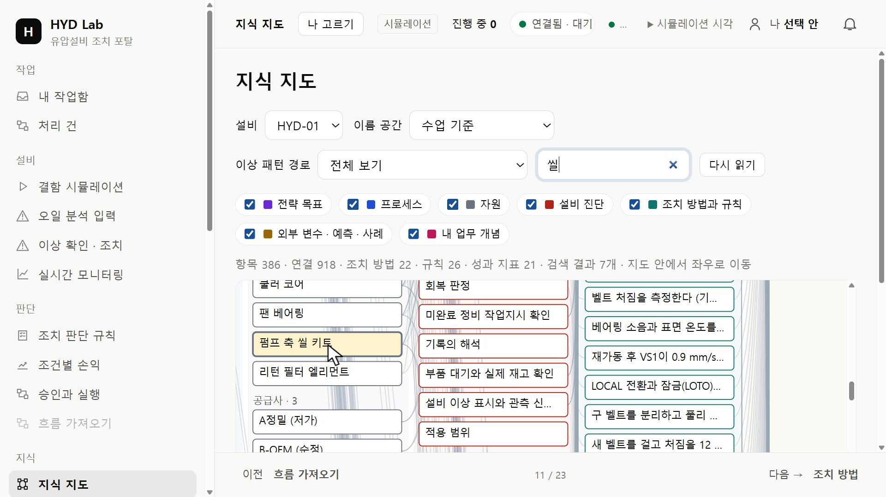
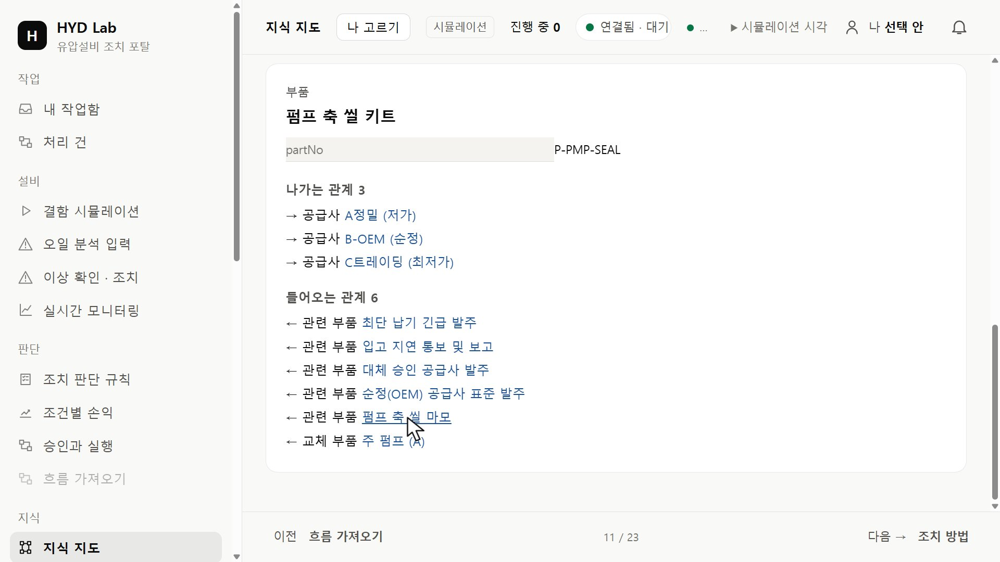
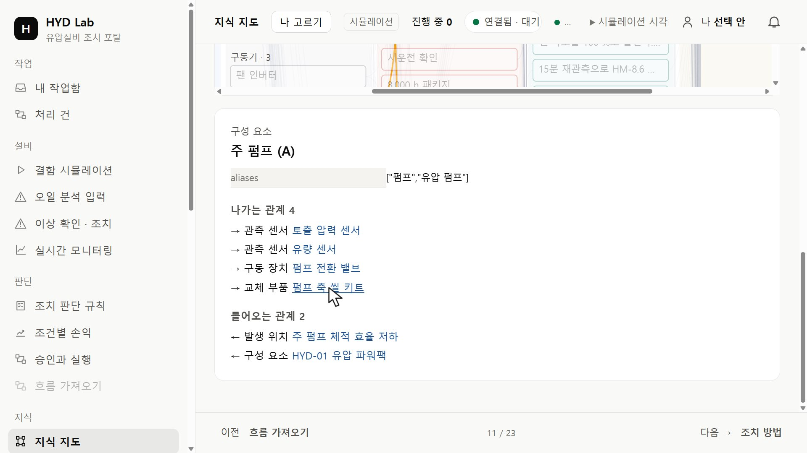
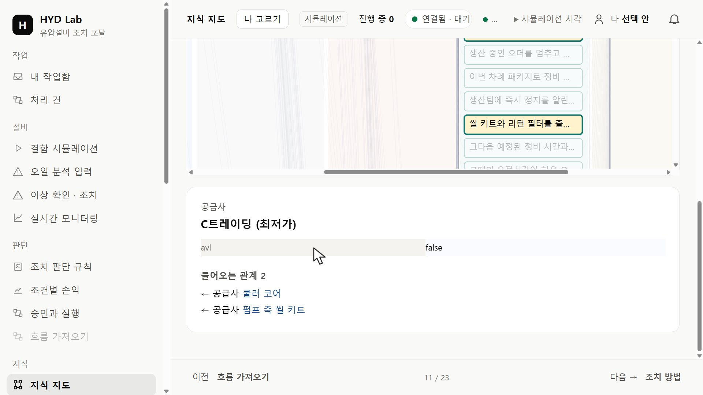
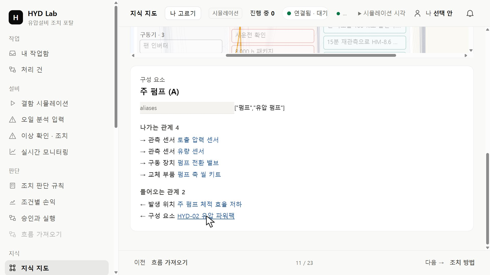

HYD · 실습 가이드포털에서 기준 지식의 연결 탐색하기
연결된 대상을 확인하고, 결과의 근거를 원자료와 대조합니다.
01 기록 틀 준비하기
실습 시작 도구가 연 VS Code에서 왼쪽 탐색기(Explorer)의 탐색_기록.md를 마우스 오른쪽 버튼으로 누르고 Copy를 고릅니다. 이어서 결과 폴더를 오른쪽 버튼으로 누르고 Paste를 고릅니다.
결과 폴더 안에 탐색_기록.md 사본이 생깁니다. 원래 틀은 그대로 두고 사본을 열어 기록합니다.
02 지식 지도에서 부품 찾기
학교 PC의 HYD 포털 열기 → 왼쪽 메뉴 지식 묶음의 「지식 지도」를 누릅니다. 위쪽 설비 칸이 HYD-01인지 확인하고, 검색 칸에 씰을 입력합니다.
「검색 결과 7개」가 나오고 지도가 첫 결과로 옮겨 가 노랗게 표시합니다. 자원 묶음의 「펌프 축 씰 키트」를 누릅니다.

검색 「씰」 뒤 노랗게 표시된 펌프 축 씰 키트 · 누르면 크게 보기03 상세 칸 읽기
상세 칸은 지도 아래에 나옵니다. 화면을 내려 종류(부품), partNo, 나가는 관계·들어오는 관계를 읽습니다. 관계 이름과 방향(→ 나가는, ← 들어오는)을 그대로 적습니다.
partNo가 앞 실습에서 조회한 품번과 같은지 봅니다. 보이는 이름보다 품번이 같은 부품인지 판단하는 기준입니다.

펌프 축 씰 키트의 partNo와 나가는·들어오는 관계 · 누르면 크게 보기04 구성 요소를 거쳐 설비까지
들어오는 관계에서 부품을 교체 부품으로 가리키는 구성 요소를 누릅니다. 그 구성 요소의 들어오는 관계에서 어느 설비의 구성 요소인지 확인합니다.
설비 → 구성 요소 → 부품으로 이어지는 경로를 기록합니다. 링크를 누르면 상세 칸이 그 항목으로 바뀌고, 다시 부품 링크를 눌러 돌아올 수 있습니다.

구성 요소 상세의 교체 부품과 소속 설비 · 누르면 크게 보기05 공급사의 승인 여부
부품으로 돌아가 나가는 관계의 공급사를 하나씩 누릅니다. 공급사 상세의 avl은 승인 공급사 목록(Approved Vendor List)에 들어 있는지를 뜻합니다.
공급사마다 avl 값을 적습니다. 단가·납기·재고 수량은 부품에도 공급사에도 없습니다 — 없는 값은 미확인으로 두고, 연결만으로 부품이 확보됐다고 판단하지 않습니다.

공급사 상세의 avl 값과 들어오는 관계 · 누르면 크게 보기06 설비를 바꿔 같은 부품 확인하기
화면을 올려 설비 칸을 HYD-02로 바꿉니다. 검색어가 남아 있어 지도가 같은 부품을 다시 표시합니다. 부품 → 구성 요소를 눌러 소속 설비를 확인하고, HYD-03도 같은 방법으로 봅니다.
설비마다 부품까지 이어진 경로를 「이 부품을 쓰는 설비」 표에 적습니다.

HYD-02에서 같은 구성 요소의 소속 설비 · 누르면 크게 보기HYD-03에서 같은 구성 요소의 소속 설비 · 누르면 크게 보기07 기록하고 다음 질문 정하기
결과/의 탐색_기록.md에 포털 주소·확인 시각·부품, 연결 표, 설비 표를 채웁니다. 「화면에 있는 것과 없는 것」에는 지도에서 확인한 공급 조건과 지도에 없어 판단하지 않은 값을 나눠 적습니다. 마지막으로 다음 실습에서 공급 자료로 답할 질문을 두세 개 적습니다.
08 저장하고 다시 열기
Ctrl+S로 저장하고 탭을 닫았다가 결과 폴더에서 다시 엽니다.
적은 내용이 그대로 남아 있습니다. 학교 PC는 재부팅하면 초기화되니 결과 폴더를 USB 또는 개인 클라우드에 복사합니다.